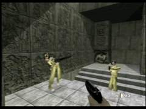
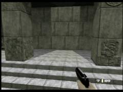

|
| Soluce
Goldeneye : Aztec |
Ce Niveau est quand meme bien dur il faut le reconnaitre. Fusée, Requin, Drone Guns, Lasers, Mooraker Elites, ça fait beaucoup ! Commençons : Deja, vous ne pourez prétendre attaquer les Objectifs que lorsque vous aurez la Carte de Requin. D'ici là, voilà mes conseils... Dans la Salle de Départ, occupez-vous du Garde à Droite. Il ne devrait pas trop poser de problèmes. par contre, gaffe aux 2 autres Energumènes à Gauche qui ont tendance à balancer des Grenades (Photo du milieu). Une fois la Salle nettoyée, direction le Passage Secret ! |


